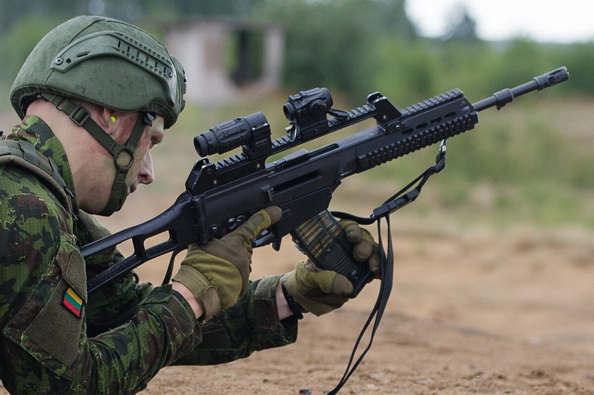

Pagrindiniai ginklai
G36 šautuvas
Vokiškas automatinis šautuvas, naudojamas pėstininkų pajėgose. Lengvas, patikimas ir tinkamas įvairioms kovos sąlygoms.
M4 karabinas

JAV gamybos karabinas naudojamas specialiose misijose ir NATO operacijose.
Kulkosvaidžiai

Kulkosvaidžiai naudojami ugnies palaikymui ir gynybai. Jie gali šaudyti ilgą laiką nepertraukiamai.
Prieštankiniai ginklai

Naudojami priešo šarvuotai technikai naikinti.